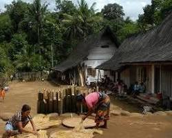

Sejarah Kampung Salapan
Kampung Salapan adalah kampung adat yang terletak di daerah Sunda. Kampung ini terkenal dengan adat istiadatnya yang masih terjaga hingga saat ini.

Lokasi Kampung Salapan
Kampung Adat Salapan terletak di kawasan pedalaman yang akan kita bahas lebih lanjut di bawah. Kampung ini memiliki keindahan tersendiri yang menarik untuk dikunjungi secara turun-temurun.

Struktur Organisasi
Struktur organisasi Kampung Salapan terdiri dari beberapa bagian yang saling bekerja sama untuk menjaga kelestarian adat dan budaya. Berikut adalah struktur organisasi Kampung Salapan.
Imah & Jumlah Kampung Salapan


Bangunan di Kampung Salapan disebut "Imah". Imah di Kampung Salapan memiliki arsitektur khas Sunda dengan atap yang berbentuk limas dan dinding yang terbuat dari kayu. Jumlah Bangunan di Kampung Salapan memiliki sekitar 50 imah yang masih terawat dengan baik.
Alat & Upacara Adat
Alat & Perlengkapan
Berbagai alat dan perlengkapan yang digunakan dalam upacara adat.
Nama Upacara Adat
Berbagai nama upacara adat yang dilakukan di Kampung Salapan.
Agama & Kepercayaan
Warga Kampung Salapan memiliki kepercayaan dan agama yang dianut secara turun-temurun.
Fakta Unik
Kampung Salapan memiliki berbagai fakta unik yang menarik untuk diketahui. Salah satunya adalah keindahan alam yang masih terjaga dan adat istiadat yang masih dilestarikan hingga saat ini.